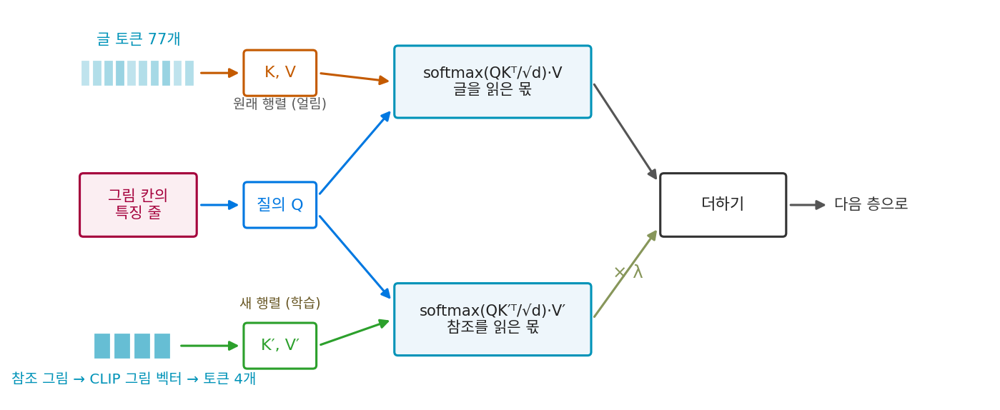

IP-Adapter: 참조 그림을 따로 읽는 크로스 어텐션
ControlNet 은 먹지처럼 칸을 맞춰 더한다. 뼈대 그림이 왼쪽에 있으면 사람도 왼쪽에 그려진다. 그런데 「이 사진 속 사람의 얼굴로, 바닷가에서 뛰는 모습을」이라는 부탁에서 참조 사진의 얼굴은 만들 그림의 어느 칸에 와도 된다. 크기도 자세도 다르다. 칸을 맞춰 더하는 방법으로는 이것을 전할 수 없다. 내용으로 골라 읽는 장치가 필요하다. 마침 U-Net 에는 그런 장치가 이미 있다. 그림 칸들이 글 토큰을 골라 읽는 크로스 어텐션이다. 참조 그림을 토큰 몇 개로 바꿔 거기에 끼워 넣으면 될까?
역사: 이어 붙이자 묻혔다
2023년 텐센트 AI 랩의 예후(Hu Ye)와 동료들도 그 생각에서 출발했다. 그전의 방법들은 CLIP 그림 인코더의 벡터를 조건으로 모델 전체를 다시 학습하거나(비용이 컸다), 그림 특징을 글 특징 줄 끝에 이어 붙여 원래의 크로스 어텐션에 그대로 넣는 작은 어댑터를 붙였다. 논문은 이어 붙이는 방법을 「충분히 효과적이지 않았다」고 적었다. 같은 조건에서 20만 걸음씩 학습해 견주어 보니, 이어 붙인 어댑터는 참조 그림을 덜 닮은 그림을 냈다.
그들이 바꾼 것은 한 가지다. 원래의 크로스 어텐션 층마다 그림만 읽는 크로스 어텐션을 하나씩 곁에 두고, 두 결과를 더했다. 질의는 같은 것을 쓰고 열쇠와 값을 만드는 행렬만 새로 두었다. 새 행렬은 원래 행렬의 값에서 출발했다. 참조 그림은 CLIP 그림 인코더(OpenCLIP ViT-H/14)의 벡터 하나를 선형 층과 층 정규화로 토큰 4개로 편다. 이렇게 Stable Diffusion 1.5 에 붙인 어댑터는 매개변수가 약 2,200만 개였고, 글–그림 쌍 1,000만 개로 V100 GPU 8장에서 100만 걸음 학습했다. 논문은 이 작은 어댑터가 모델 전체를 다시 학습한 그림 조건 모델과 견줄 만하거나 더 낫다고 보고했다.
질의는 하나, 읽는 곳은 둘
그림 칸의 특징 줄에서 질의 Q를 만든다. 글 토큰 줄 c에서는 원래 행렬로 열쇠와 값을, 참조 그림의 토큰 줄 cimg에서는 새 행렬로 열쇠와 값을 만든다.

새로 학습하는 것은 크로스 어텐션 층 16개마다의 W′K, W′V와 그림 벡터를 토큰 넷으로 펴는 층뿐이다. ComfyUI 의 Stable Diffusion 1.x U-Net 에서 크로스 어텐션의 행렬 모양을 읽어 세면 새 열쇠·값 행렬이 1,917만 개, 펴는 층이 315만 개, 합해 2,232만 개로 논문의 「약 22M」과 맞는다. λ는 생성할 때 고르는 손잡이다. 학습 때는 글과 그림을 각각 5%, 둘 다 5% 확률로 지워, 분류기 없는 가이던스를 쓸 수 있게 했다.
이렇게 참조 그림을 토큰 몇 개로 바꿔 원래 크로스 어텐션 곁의 새 크로스 어텐션으로 따로 읽히게 하는 어댑터를 IP-Adapter (그림 프롬프트 어댑터 / Image Prompt Adapter)라 한다.
ML에서: 토큰 4개, 16개, 그리고 여러 장
토큰 4개는 CLIP 그림 벡터 하나를 편 것이라 그림의 대략적인 내용과 화풍을 담는다. 논문은 CLIP 그림 인코더의 끝에서 둘째 층에서 칸마다의 특징을 꺼내, 학습하는 질의 토큰 16개가 골라 읽게 한 판도 실었다. 참조를 더 닮게 그리지만 구도까지 따라 그려 다양성이 준다고 적었다. ComfyUI 에서 많이 쓰는 확장 노드(comfyui_ipadapter_plus)는 모델 파일을 보고 토큰 수를 4개, Plus 판은 16개로 정한다. 참조 그림을 여러 장 넣으면 그림마다 만든 토큰을 이어 붙이거나(concat, 4장이면 16개), 더하거나, 평균 낸다(combine_embeds). 같은 「그림을 토큰 몇 개로 바꿔 글 곁에 둔다」는 생각은 디퓨전 트랜스포머에서도 쓰였다. FLUX.1 의 Redux 는 SigLIP 그림 인코더의 토큰 줄을 선형 층 둘로 글 토큰과 같은 폭(4096)으로 옮겨 T5 글 토큰 줄 끝에 이어 붙인다(comfy/ldm/flux/redux.py, nodes.py 의 StyleModelApply). 합동 어텐션 모델에서는 글 토큰 줄에 붙이는 것이 곧 그림 토큰과 한 줄에 서는 것이다.
문제 4. 두 방송의 볼륨
차 안에서 뉴스 방송과 음악 방송을 함께 틀고 싶다. 방법 ㉠ 은 두 방송을 한 안테나로 받아 섞인 소리 하나만 스피커로 보낸다. 섞인 소리에서 뉴스는 세기 1, 음악은 세기 0.4다. 방법 ㉡ 은 두 방송을 따로 받아, 음악 쪽에만 볼륨 손잡이 λ 를 달고 더한다. (가) ㉡ 에서 λ = 2, 0.5, 0 이면 음악의 세기는? (나) ㉠ 에서 음악만 두 배로 키울 수 있는가? (다) ㉠ 에서 전체 볼륨을 두 배로 올리면?

(가)는 0.8, 0.2, 0이요. 0이면 뉴스만 나오는 원래 라디오고요.

(나)는 못 해. 섞인 소리 안에서 어느 몫이 음악인지 가를 손잡이가 없어.

(다)를 해 보면요?

뉴스 2, 음악 0.8이요. 음악을 키우려다 뉴스까지 커져요. 비율은 그대로고요.

그래요. ㉡ 이 IP-Adapter 의 따로 읽기예요. 글을 읽은 몫과 참조를 읽은 몫이 따로 나오니까, 참조 쪽에만 λ 를 곱할 수 있어요.

그리고 λ = 0이면 어댑터를 떼어 낸 원래 모델이 되는 거고.

조별 발표 녹화를 한 마이크로 받으면 나중에 한 사람 목소리만 키울 수 없는 거랑 같네요.
문제 5. 하나의 softmax 에 이어 붙이면
그림 칸 하나의 질의가 글 토큰 77개와 참조 토큰 4개를 읽는다. (가) 둘을 이어 붙여 softmax 하나로 읽고, 81개의 점수가 모두 같다면 참조 토큰 4개가 받는 비중의 합은? (나) 참조 토큰의 점수가 글 토큰보다 모두 2만큼 높다면? (다) 글 토큰이 512개인 모델에서 (나)를 다시 계산하라. (라) 따로 읽으면 참조 쪽 비중의 합은 얼마인가?
(가)는 4 ÷ 81 = 0.049, 5% 쯤이요.
(나)는 참조 하나의 무게가 e² = 7.39배니까 4 × 7.39 ÷ (77 + 4 × 7.39) = 0.277.
참조 쪽이 더 높은 점수를 받았는데도 30%가 안 되네요. (다)는요?

4 × 7.39 ÷ (512 + 29.56) = 0.055요. 같은 참조, 같은 점수인데 글 토큰이 많아지니까 5% 남짓으로 줄었어요.

하나의 softmax 에서는 비중의 합이 1로 묶여 있어서, 참조 토큰 넷이 글 토큰 수십, 수백 개와 그 1을 나눠 가져. 글이 길수록 참조는 묻혀.
그럼 (라)는요?
참조만 읽는 softmax 에서는 참조 토큰 넷의 비중 합이 늘 1이에요. 글 토큰이 몇 개든 상관없고, 세기는 λ 가 따로 정해요.
논문은 이어 붙이기가 「충분히 효과적이지 않았다」는 결과만 적었어요. 이 계산은 그렇게 될 만한 까닭 하나를 보여 주는 거예요.

단톡방 공지 하나가 잡담 백 개 사이에 묻히는 거랑, 공지방을 따로 두는 거랑 차이네요.
문제 6. 두 장을 이어 붙일까, 평균 낼까
강아지 사진 A 와 수채화 B 를 참조로 넣는다. 두 그림의 CLIP 그림 벡터는 길이 1이고 서로 수직이라고 하자. (가) 이어 붙이기(concat)와 평균 내기로 만든 참조 토큰은 각각 몇 개인가? (나) 평균 낸 그림 벡터의 길이와, A·B 와의 코사인 유사도는? (다) 이어 붙인 참조 토큰 줄에서 A 의 토큰들과 B 의 토큰들의 순서를 맞바꾸면 따로 읽는 크로스 어텐션의 출력은 어떻게 되는가? (라) 「A 의 강아지를 B 의 화풍으로」와 「B 의 화풍을 띤 무언가를 A 의 색으로」를 IP-Adapter 의 참조 쪽만으로 가를 수 있는가?
(가)는 이어 붙이면 4 + 4 = 8개, 평균 내면 4개요. (나)는 (A + B)/2 의 길이가 √0.5 = 0.707, 코사인도 0.5 ÷ 0.707 = 0.707이에요.

평균 벡터는 어느 쪽과도 45° 떨어져 있네. 강아지 사진도 수채화도 아닌 그 사이 어딘가의 그림 벡터야.
(다)는 어때요? 어텐션 식에서 열쇠 줄의 순서를 바꾸면 무엇이 바뀌죠?

점수 줄의 순서가 바뀌니까… 출력도 바뀌지 않아요?
점수와 값이 같은 순서로 함께 바뀌어. softmax 를 해서 값에 곱해 더하는 건 순서와 상관없는 합이라, 출력은 하나도 안 바뀌어. 참조 토큰에 위치 정보가 없으니 어텐션에게 이 줄은 순서 없는 주머니야.
그럼 (라)는 못 가르네요. A 와 B 가 바뀌어도 똑같이 읽히는데, 무엇이 A 의 몫인지 알 수가 없어요. 「A 의 강아지」라는 말은 글 쪽에 있는데, 글 쪽은 A 라는 그림을 모르고요.
그래요. 여러 장을 넣는 것까지는 되지만, 참조마다 이름표를 붙이고 글에서 그 이름표를 부르는 길은 아직 없어요.
과제 자료를 이름 안 쓰고 한 상자에 몰아 넣으면, 조교가 내용은 다 봐도 누가 어느 걸 냈는지는 모르는 거랑 같네요.